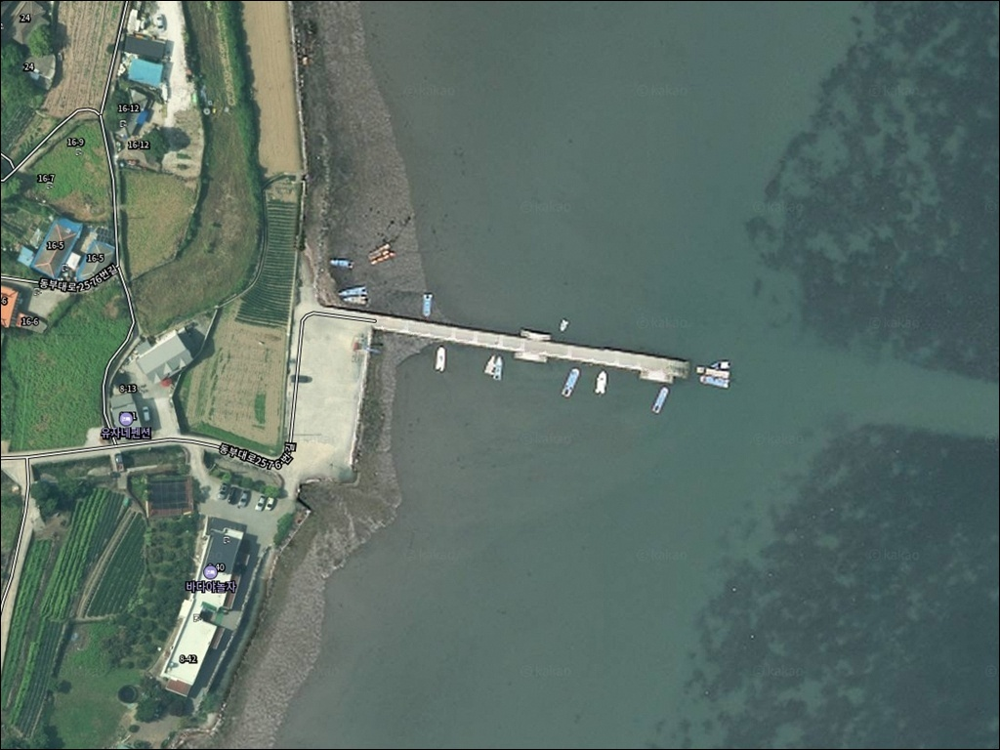
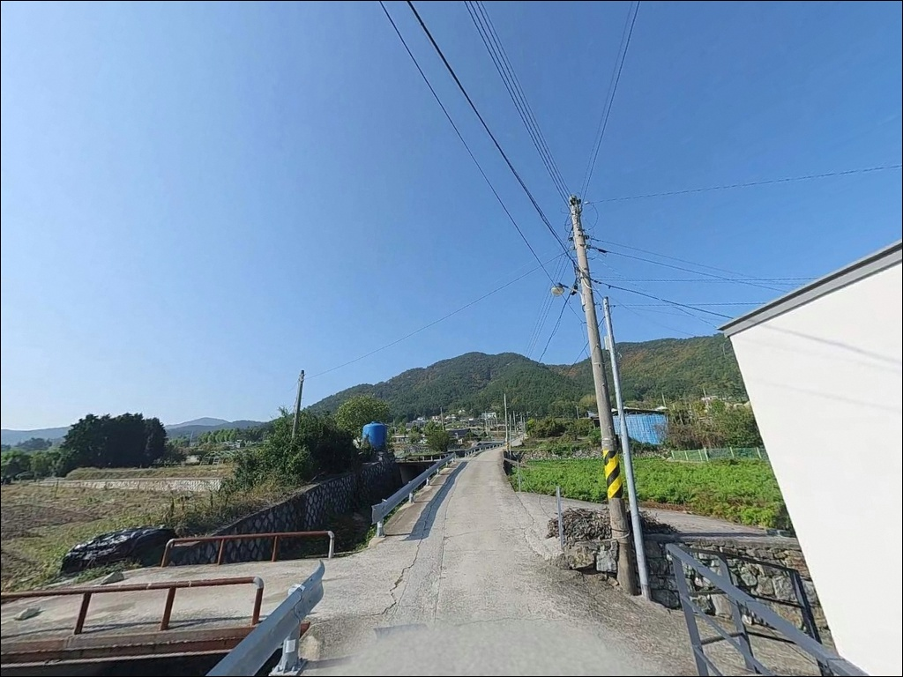
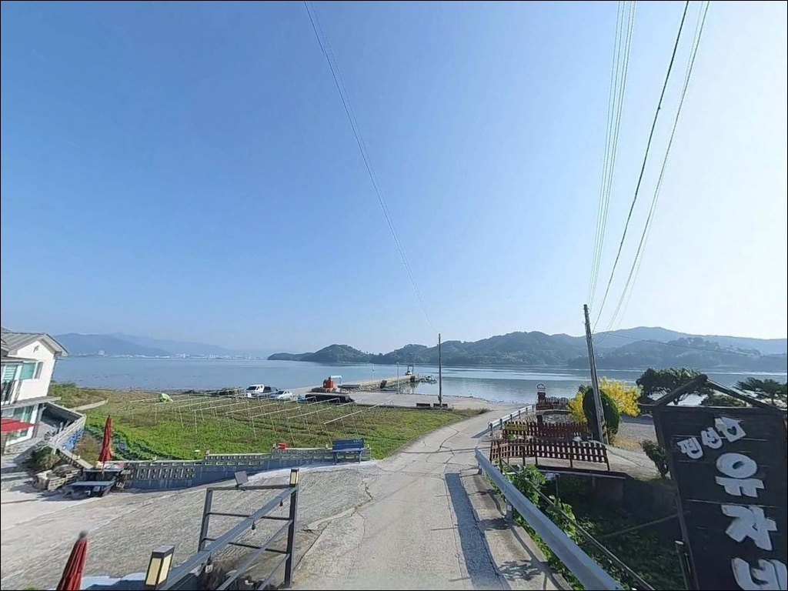
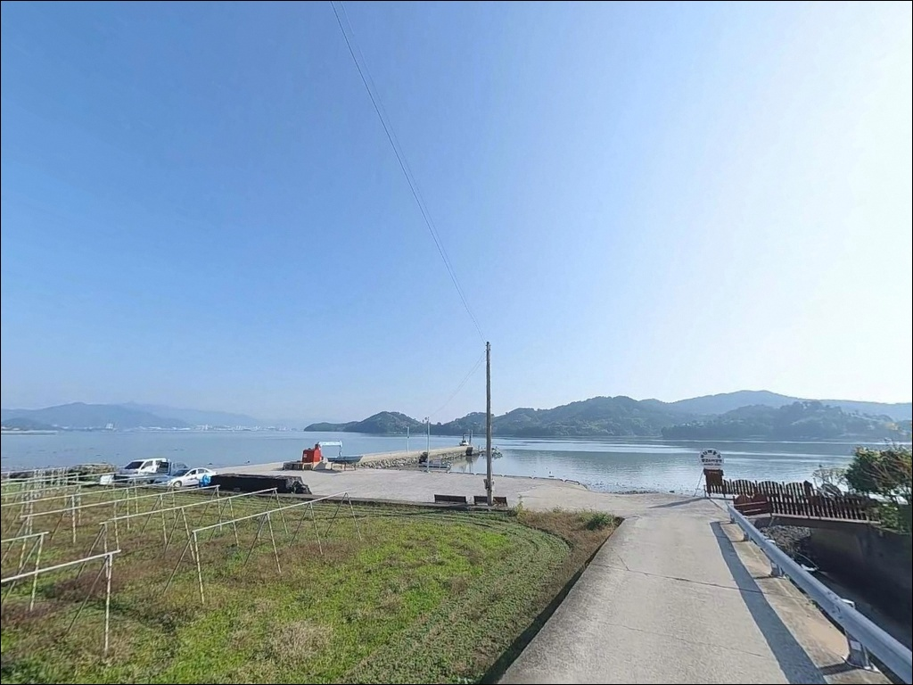
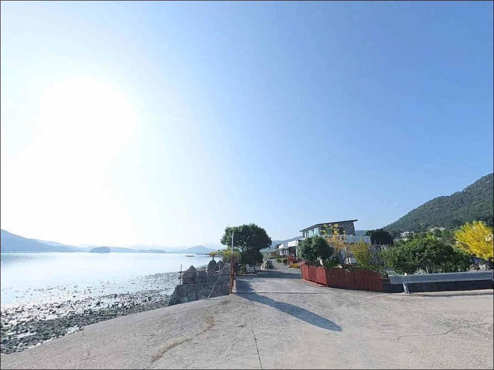
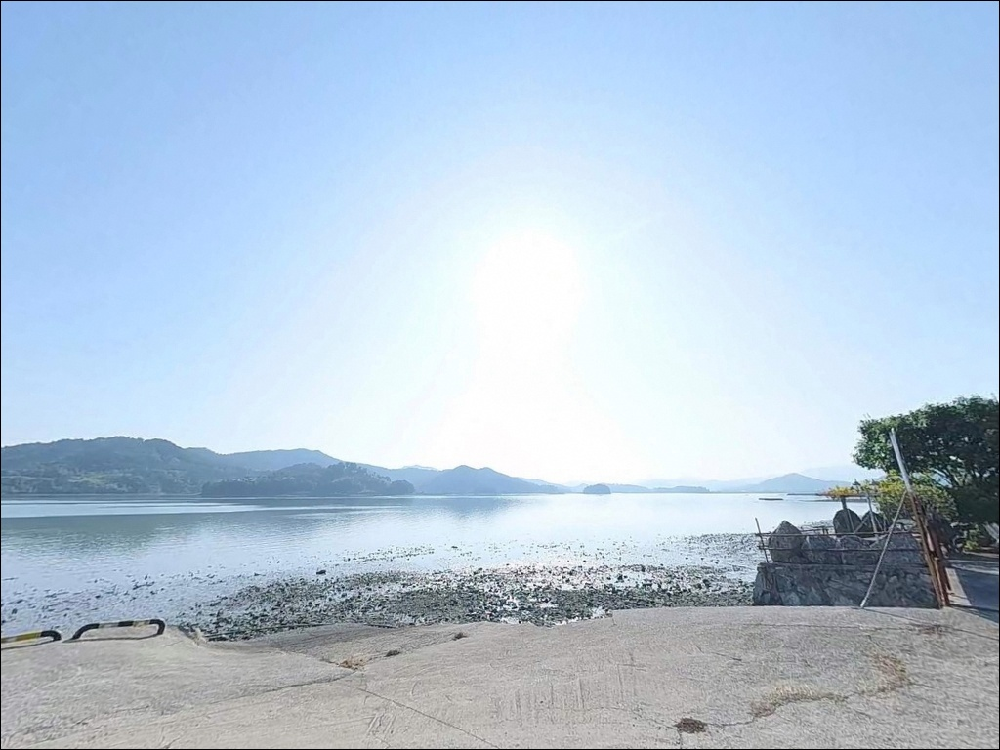
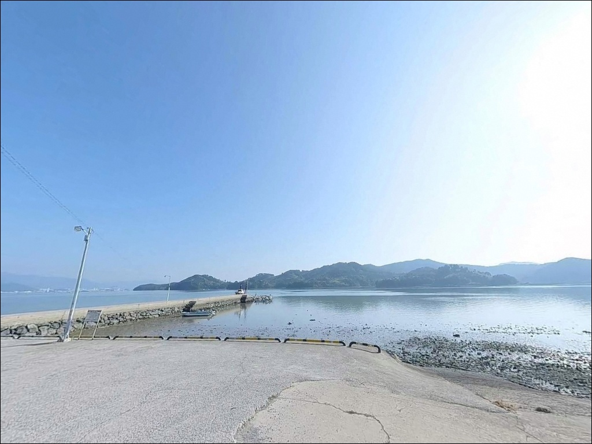
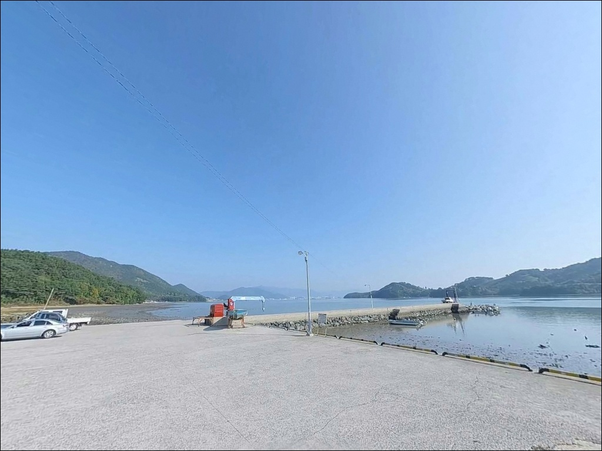
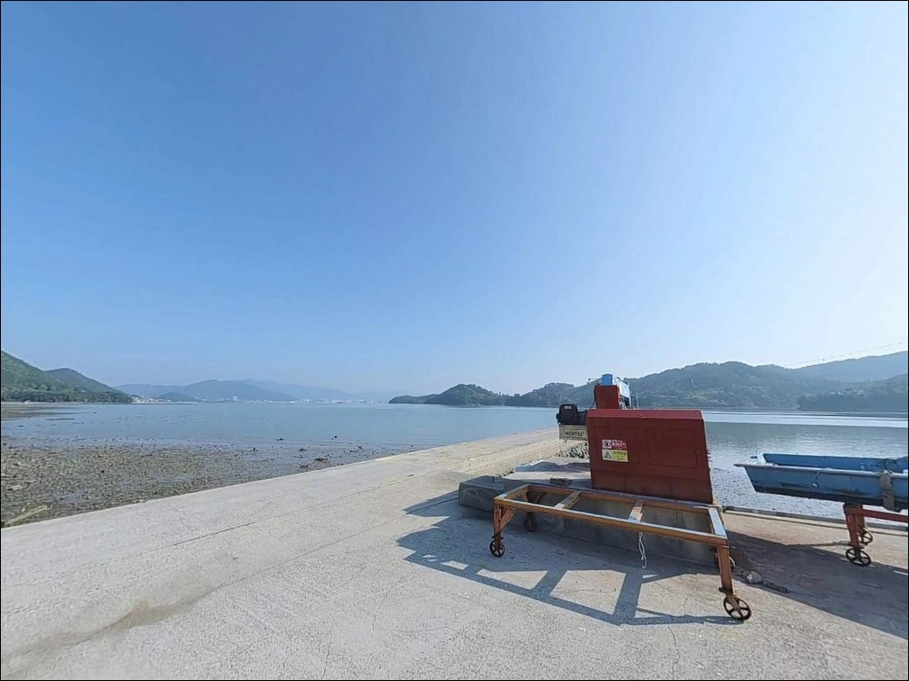

이 페이지에는 광고(제휴 링크 포함)가 있으며, 광고 링크를 통해 구매하면 운영자가 판매 수익 또는 수수료를 받을 수 있습니다. 포인트 사진: 카카오맵 스카이뷰·로드뷰. 이 페이지의 지도·사진 이미지는 카카오맵의 실제 서비스 이미지와 다를 수 있습니다.

동대리선착장
경남 남해군 창선면 동대리 174-8
동대만 내항 구조는 파도를 막아주는 대신
간조 때 수심이 크게 낮아지는 구간이 생깁니다.
만조 전후를 기준으로 타이밍을 잡지 않으면
선착장 끝단조차 바닥이 드러나는 상황을
맞닥뜨릴 수 있는 자리입니다.
창선도 동쪽 해안, 사천만을 향해 완만하게 열린
동대만 안쪽에 위치한 동대리선착장은
2002년 어촌정주어항(동대항)으로 지정된
길이 148m, 폭 4m 규모의 소형 콘크리트 선착장입니다.
온라인에 낚시 정보가 거의 없는
아직 덜 알려진 창선도 동쪽 포인트입니다.
이 글은
동대리선착장의 진입 여건, 지형 구조,
낚시 방식 적합성, 차박 환경에 집중합니다.
조황 단정이나 특정 어종 보장은
이 글의 범위에 포함되지 않습니다.

창선-삼천포대교를 건너 창선도로 진입한 뒤
동대리 방면 해안 소로를 따라 들어오는 구조입니다.
창선면 동부대로에서 동대리 마을로 이어지는
진입로는 포장이 완료된 구간이며,
승용차 2대가 교행 가능한 폭으로
소형~중형 차량은 큰 무리 없이 접근할 수 있습니다.
마을 내부로 들어갈수록 도로 폭이 좁아지는
생활도로 성격이 강해집니다.
대형 SUV나 캠핑카라면 진입 전
위성지도로 마을 내부 도로 폭을
미리 확인하는 편이 안전합니다.
회차 공간은 선착장 앞 마을 공터에서 확보됩니다.
주차는 선착장 진입 직전 공터와
방파제 입구 평지 2곳이 후보입니다.
2~3대 규모의 공간이며,
어선 접안 작업 동선을 먼저 확인하고
자리를 잡는 것이 기본 매너입니다.

동대리는 10여 가구 규모의 소규모 어촌 마을입니다.
민가 밀집도가 낮고 야간 차량 통행이
거의 없는 편이라
프라이버시 확보는 비교적 양호한 구조입니다.
마을 가로등 수준의 조명이 유지되어
완전 암흑 환경은 아닙니다.
내만 구조라 파도 소음이 적고
바람 영향도 외항형 포인트보다 낮습니다.
낚시 후 조용히 하룻밤 머무는 단기 체류 용도로
나쁘지 않은 조건이지만,
선착장 인접 공터 규모가 크지 않아
주차 공간 확보 여부를 출발 전에 먼저 확인하는
편이 좋습니다.
개인 조명 장비는 필수입니다.
선착장 구역 직접 조명은 제한적이며
야간 슬로프 구간은 이끼와 해조류로
미끄러운 편입니다.
헤드랜턴을 반드시 챙기고,
슬로프 끝단 접근은 낮 동안
지형을 먼저 파악해 두는 것이 안전합니다.

선착장에서 가장 가까운 편의점은
동대리 480에 위치한 GS25 동대만점으로 24시간 운영합니다.
반경 3km 이내에서 접근 가능한 수준이라
식수·간식·얼음 등 기본 소품은
현지 조달이 가능한 구조입니다.
낚시 채비나 생미끼 등
전문 소품이 필요한 경우에는
창선-삼천포대교를 건너
삼천포 방면 낚시점을 이용하는 편이 좋습니다.
이 방향으로 약 10km 거리에
사천시 삼천포권 상업 인프라가 집중되어 있습니다.
응급 상황 발생 시에도
삼천포 방면 종합병원과 응급실이
차량으로 10~15분 거리에 해당합니다.
출발 전 연료와 비상약품은 넉넉하게
준비하는 것이 기본입니다.

동대리선착장 방문 전에 가장 먼저 확인할 것은
물때입니다.
동대만 내항 구조 특성상
간조 때 수심이 낮아지는 폭이 크고,
선착장 끝단 주변 수심 변화가 뚜렷합니다.
바다타임에서 남해 창선면 기준 물때를 확인하고
만조 전후 2~3시간을 타이밍으로
출발 시각을 맞추는 것이 기본입니다.
내만형이라도 기상 변화 시
바람 영향이 예상보다 빠르게 들어오는 경우가 있습니다.
출조 당일 아침 기상청 예보를 한 번 더 확인하고
풍속 변화 구간을 파악해 두는 것이
현장 낭비를 줄이는 방법입니다.
선착장은 어민들의 어업 공간이므로
어선 접안 작업과 어구(통발, 그물)에
접촉하지 않도록 자리를 잡습니다.
구명조끼는 반드시 착용하고,
여분 채비는 충분히 준비하는 편이 좋습니다.
슬로프 구간은 야간 전에 지형을 파악해 두어야 합니다.

동대리선착장의 핵심은
창선도와 사천만 사이 내해를 향해
완만하게 열린 내항 구조에 있습니다.
선착장 끝단으로 갈수록 수심이 깊어지며,
바닥 구조는 니질과 모래가 혼합된
내만형 저질 지형입니다.
조류는 사리 전후를 제외하면
완만한 흐름이 기본입니다.
들물과 날물 초기에
조류 흐름이 살아나는 구간이 생기며,
이 타이밍에 선착장 외측으로
채비를 흘리는 방식이 효과적입니다.
선착장 끝단과 슬로프 주변이 낚시 적합 구간으로
파악됩니다.
창선도 동쪽 해역은 지족해협 강류 구역과
직접 연결되지 않아 파도와 너울 영향이 낮습니다.
바람이 강한 날에도 내만이라
체감 환경이 외항형 방파제보다 안정적입니다.
다만 날씨 변화 자체는 빠를 수 있으니
출조 전 최신 조황과 기상 정보를
꼭 검색해 보시기 바랍니다.

이 선착장에서 가장 잘 맞는 방식은
원투낚시입니다.
니질-모래 혼합 저질과
선착장 끝단에서 이어지는 수심 변화 구간이
바닥 공략에 유리한 조건을 갖추고 있습니다.
선착장 끝단에서 전방 수역으로 중거리 투척하는
방식이 이 지형에 어울립니다.
도다리, 붕장어, 숭어 계열을
기대해 볼 수 있는 저질 구조입니다.
찌낚시도 보조 방식으로 적합합니다.
들물·날물 초기 조류가 살아나는 타이밍에
선착장 외측으로 채비를 흘리는 방식이 맞습니다.
조류가 완만한 환경이라
무거운 봉돌 없이도 운용이 가능하며,
감성돔, 볼락, 전갱이 계열을
이 해역에서 기대해 볼 수 있는 어종으로
접근하는 구성이 현실적입니다.
가벼운 루어 낚시도 병행할 수 있습니다.
슬로프 하단과 선착장 구조물 주변을
소형 지그헤드 채비로 천천히 탐색하는 방식으로,
볼락과 쏨뱅이 계열이
수중여 주변에 붙는 내만형 지형 조건에
어울리는 방식입니다.
야간 입장 시 볼락 라이트게임이
원투와 함께 운용하기 좋습니다.

동대리선착장이 여의치 않은 경우
첫 번째 대안은 단항항입니다.
북쪽으로 약 5km 거리에 위치하며,
내항 방파제 구조로 원투낚시 조건이
동대리선착장과 유사합니다.
주차 공간이 넓고 접근성이 좋아
플랜 B 거점으로 묶기 좋은 포인트입니다.
낚시 여건을 더 살리고 싶다면
창선도 내 서대리방파제로 이동하는 방법도 있습니다.
바다타임에 등재된 창선도 포인트로
외항·내항 구분 낚시가 가능한
방파제 구조물을 갖추고 있습니다.
찌낚시와 원투낚시 모두 적합한 자리입니다.
조류 흐름을 적극 활용하는 방식을 선호한다면
지족리 앞바다를 탐색해 볼 수 있습니다.
지족해협 구역은 조류 흐름이 강한 편이라
채비 무게를 올리고
물때 계산을 먼저 해두어야 합니다.
창선-삼천포대교를 기점으로
세 포인트를 묶어 돌아보는 동선이
이 권역에서 효율적입니다.

원투낚시 중심으로 조용하게 바닥을 공략하거나,
볼락 라이트게임을 즐기는 낚시인이라면
동대리선착장의 내만형 지형 조건은
잘 맞는 구조입니다.
온라인에 정보가 적어
직접 발품을 팔아야 하는 탐방형 포인트이기도 해서,
먼저 답사해 두면 다음 출조에
더 요긴하게 쓰이는 자리입니다.
반면 간조 타이밍에 아무 준비 없이 진입하면
낚시 자리 자체가 절반으로 줄어들 수 있습니다.
물때 확인, 진입로 사전 점검, 자급 준비
이 세 가지를 갖추고 간다면
창선도 동쪽 해안에서
조용하고 실용적인 출조를 보낼 수 있는 곳입니다.
GS25가 반경 내에 있어 기본 자급이 가능하고
민가 밀집도가 낮아 야간 체류도 나쁘지 않습니다.
낚시와 차박을 함께 계획한다면
물때와 주차 공간만 사전에 확인해두면
충분히 활용 가능한 포인트입니다.